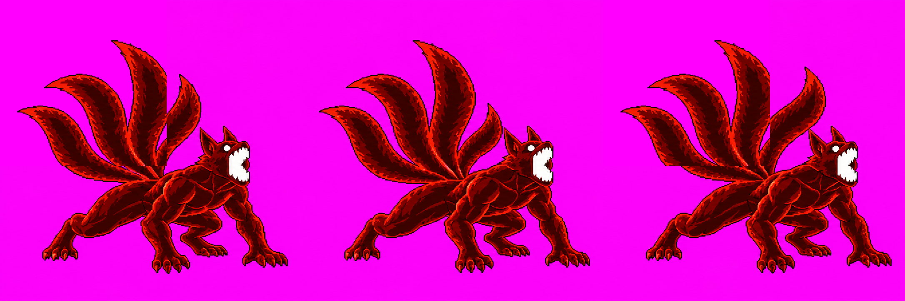
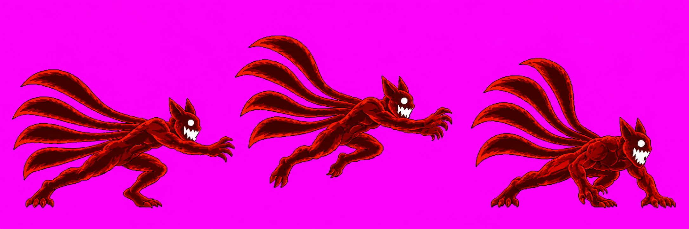
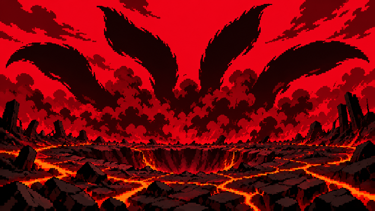
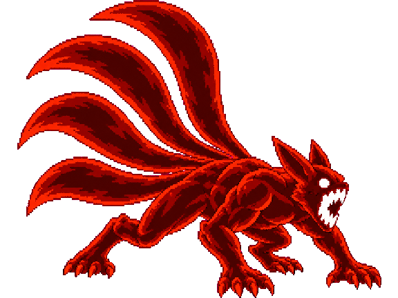
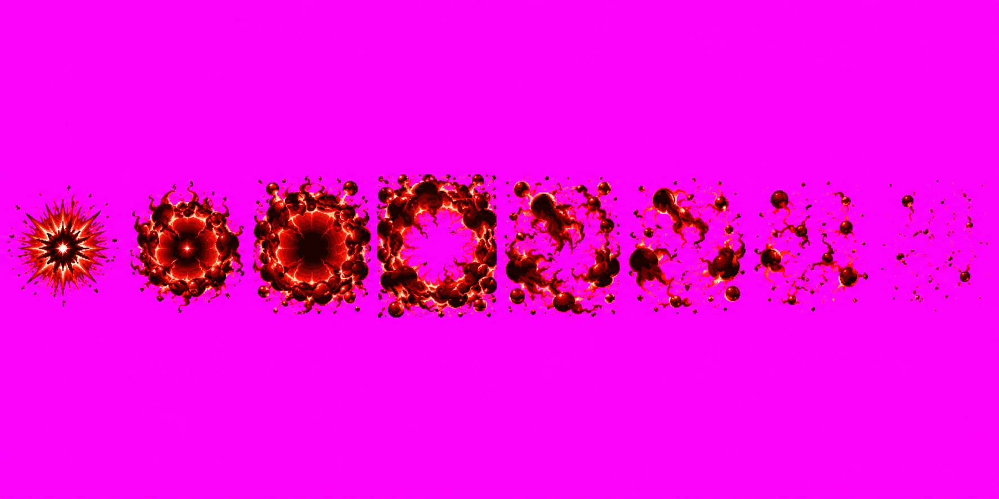
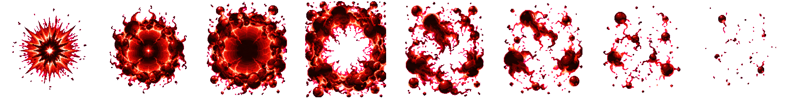

Naruto Skills Revamp · Batch 1
Fixed Four-Tails set for visual approval. B1 and B2 were corrected without new image-generation calls; B3 and the roar effect stay on their original sources.
Approval requested; technical limits are disclosed. The strict character packer still withholds the atlas because it cannot detect a human head on the fully engulfed beasts. Per your decision, Claude records version-bound scaleManualQA after visual approval. No scale pass is claimed here.
B1 · beamCharge v11 NO-CALL EDIT · TECHNICAL HOLD

- f0 and f2 now use the same four-tail fan pixels as f1.
- Body pixels outside the fan field were verified unchanged.
- All frames show four tails. Astra found a visible rectangular join in f2 at x400; it is exposed here for review and remains a technical hold. Anatomy calibration stays with Claude after approval as requested.
B2 · beamFire v14 PLACEMENT FIX

- f0/f1 shift 21 final-cell pixels left; the diagnostic pack reports no clipping or 4px-margin warning.
- Requested engine mapping: f0 becomes the claw-slam frame; f2 remains the landing pose. Claude still needs to apply this mapping.
- Scale gate cannot detect a human head; scaleManualQA is deferred to Claude after approval.
B3 · ui_ult_fg v04 REVIEW CANDIDATE · ANATOMY HOLD

- Four tails, two ears, full engulfment, complete silhouette and 576×432 transparency are verified.
- A warm pale CSS outline makes the silhouette easier to separate from the red backdrop in this review composition; source pixels stay unchanged.
- Body-scale comparison remains uncertain and is not presented as a numeric pass.


Current approved fitted image (v01) still shows the human head: view v01.

A8 · fourTailsRoar v01 HD PACKED

- Candidate packer produced eight 256×256 cells with center anchor in a 2048×256 HD atlas.
- Scale x0.988; 267 isolated specks removed; no fourTailsRoar-specific packing warning.
- The gameplay bundle remains unmerged; this page shows the candidate atlas only.

Audit and provenance
See the Astra audit, prior audit and generation-call and pixel-edit ledger. The strict full Naruto pack did not write the character atlas: both fully engulfed strips lack a detectable human head. The separate HD effect atlas did pack successfully. This review page is for the user's visual approval of the listed versions; the post-approval scale record remains pending with Claude.